Lie Group Theory & Kalman Filtering
SEL5917
Prof. Dr. Marcos Rogério Fernandes
October 20, 2026
Objectives:
The objectives of this class are to understand:
- Introduction to Lie Group Theory;
- Random Variables on Lie Groups;
- Dynamic Systems on Lie Groups;
- EKF on Lie Groups;
- Example;
Group Theory
- Closure: $a \cdot b \in G, \, \forall a, b \in G$
- Associativity: $a \cdot (b \cdot c) = (a \cdot b) \cdot c \quad \forall a, b, c, \in G$
- Identity element: there is an element $1_G \in G$ such that
$a \cdot 1_G = 1_G \cdot a = a, \, \forall a \in G$ - inverse element: for each $a \in G$, there is an element $b \in G$ such that $a \cdot b = 1_G$
Discrete Group: Symmetries of the Square
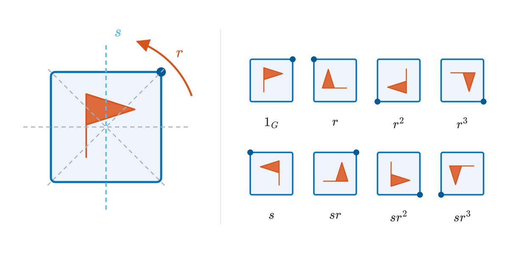
Continuous Group: Symmetries of the Circle
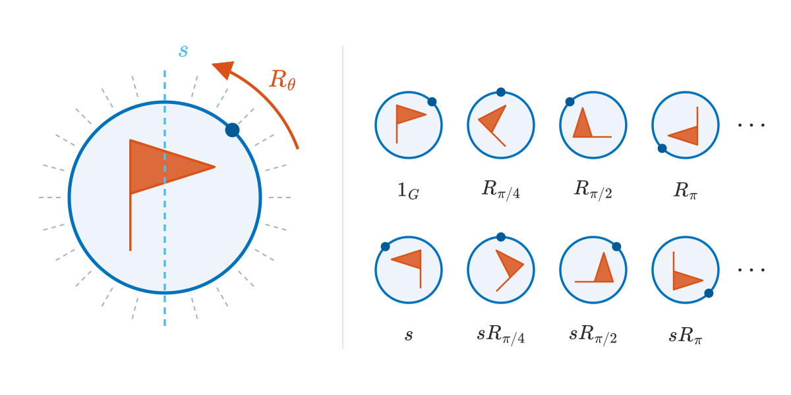
Topology
- $\emptyset \in \mathcal{T}$ and $X \in \mathcal{T}$;
- The union of the elements of any subcollection of $\mathcal{T}$ is in $\mathcal{T}$;
- The intersection of the elements of any finite subcollection of $\mathcal{T}$ is in $\mathcal{T}$.
The ordered pair $(X, \mathcal{T})$ is a topological space. The elements of $\mathcal{T}$ are called open sets of $X$.
Topology
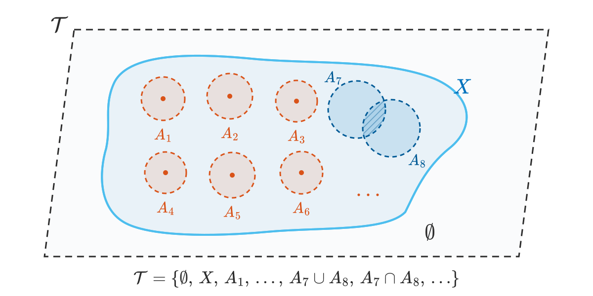
Hausdorff Space
A topological space $(X, \mathcal{T})$ is said to be a Hausdorff space if for every pair $x_1, x_2 \in X$, with $x_1 \neq x_2$, there exist open neighborhoods $U_1$ and $U_2$ such that $x_1 \in U_1$, $x_2 \in U_2$ and $U_1 \cap U_2 = \emptyset$.
Hausdorff Space
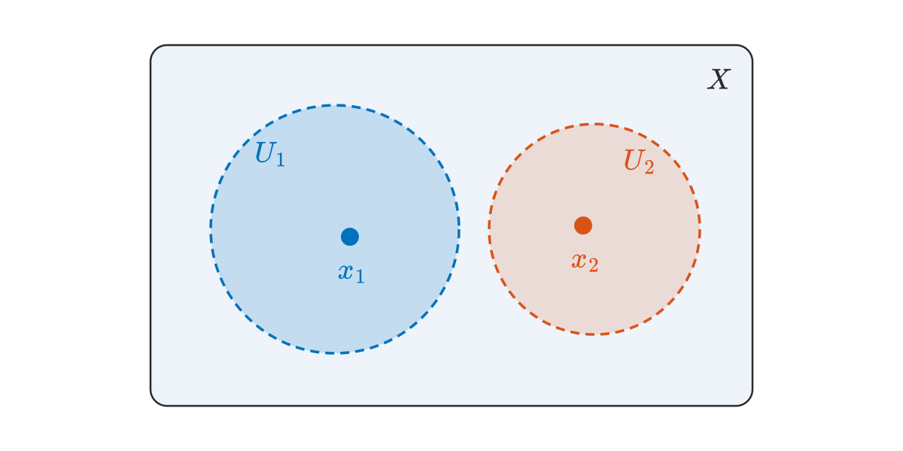
Homeomorphism
Let $X$ and $Y$ be topological spaces. A function $f : X \to Y$ is said to be an homeomorphism if
- $f$ is a bijection
- Both $f$ and $f^{-1}$ are continuous
Homeomorphism
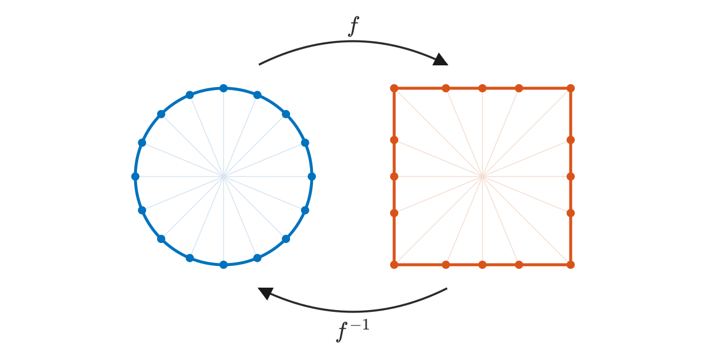
Homeomorphism in 3D
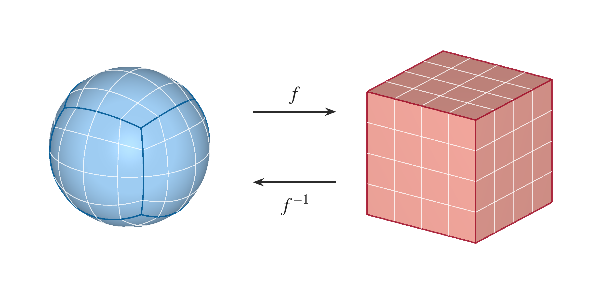
Manifold
A topological space $M$ is said do be a manifold of dimension $m$ if:
- $M$ is a Hausdorf space;
- $M$ has a countable basis for its topology (second-countable);
- for each point $p \in M$, there exist an open set $U \subset M$, an open set $V \subset \mathbb{R}^m$ and a map $\phi : U \to V$, such that $p \in U$ and $\phi$ is an homeomorphism.
Manifold
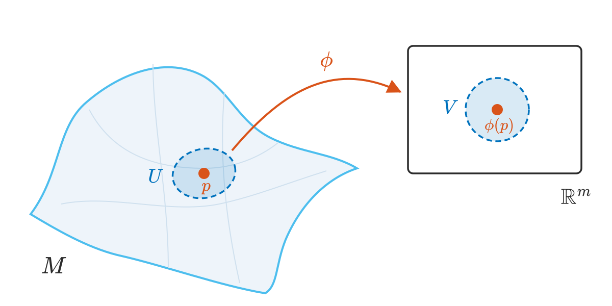
Chart
Let $M$ be a $m$-dimensional topological manifold. A $m$-dimensional chart is an homeomorphism $\phi$ from an open subset $U \subset M$ to an open subset $V \subset \mathbb{R}^m$.
$C^k$-Atlas
A $m$-dimensional Atlas of differentiability class $C^k$, or a $C^k$-Atlas, for a manifold $M$ is a set $\mathcal{A}$ of $C^k$-compatible charts in $M$ such that the domain covers $M$.
$C^k$-Atlas
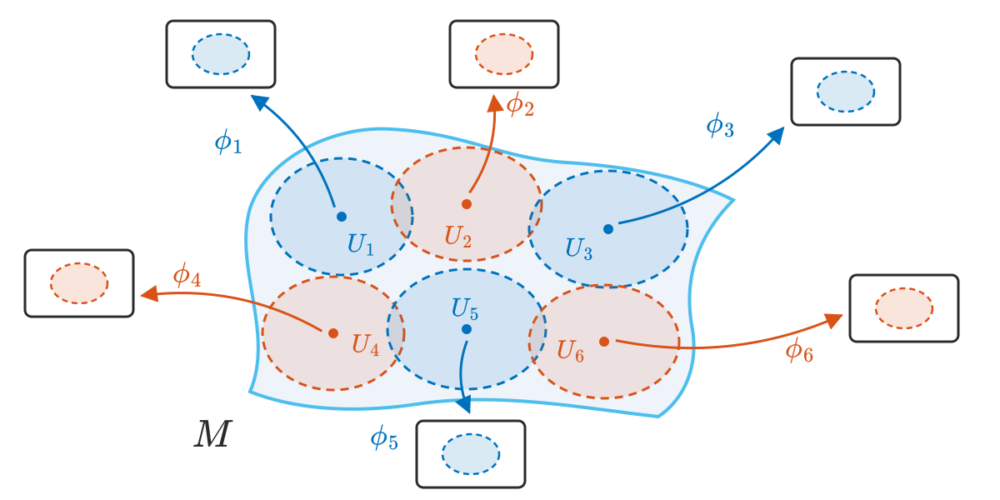
Transition Map
Let $M$ be a $m$-dimensional topological manifold. Let $\phi : U \to \mathbb{R}^m$ and $\psi : V \to \mathbb{R}^m$ be charts in $M$ for $U \subset M$ and $V \subset M$ with $U \cap V \neq \varnothing$. The maps
$$ \begin{aligned} \psi \circ \phi^{-1} &: \phi(U \cap V) \to \psi(U \cap V) \\ \phi \circ \psi^{-1} &: \psi(U \cap V) \to \phi(U \cap V) \end{aligned} $$are called transition maps (from $\phi$ to $\psi$ and from $\psi$ to $\phi$).
Transition Map
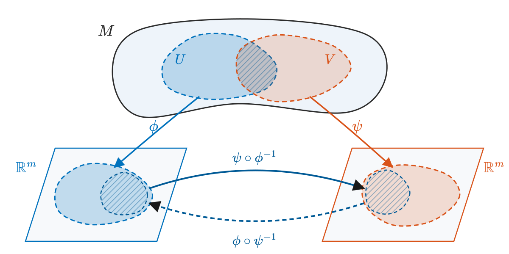
$C^k$-Manifold
A $m$-dimensional topological manifold $M$ provided with a $C^k$-Atlas $\mathcal{A}$ forms the pair $(M, \mathcal{A})$ and is defined as a $C^k$-manifold. If the atlas $\mathcal{A}$ is of class $C^\infty$, then the manifold is said to be a smooth manifold.
$C^k$-Manifold
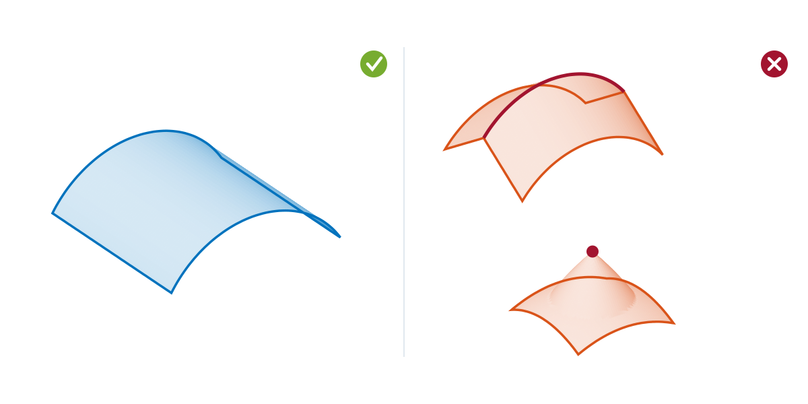
$C^k$-Map
Let $M$ and $N$ be $C^k$-manifolds. A map $f : M \to N$ is said to be a $C^k$-map if, for any charts $\phi$ of $M$ and $\psi$ of $N$, the composition $\psi \circ f \circ \phi^{-1}$ is of class $C^k$ on its domain.
$C^k$-Map
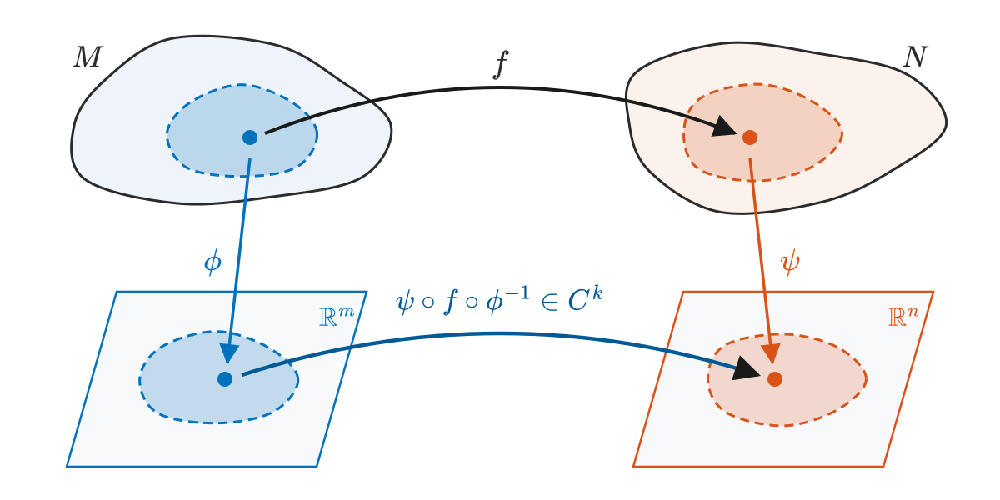
Lie Group Theory
A Lie group is a group whose set $G$ also has a structure of a smooth manifold ($C^\infty$), so that the product map
$$ \begin{aligned} \Psi : G \times G &\to G \\ (g, h) &\mapsto \Psi(g, h) = g\cdot h \end{aligned} $$is smooth map ($C^\infty$).
Special Orthogonal Group $SO(n)$
The special orthogonal group of dimension $n$ is the set of rotation matrices
$$ SO(n) = \left\{ R \in \mathbb{R}^{n \times n} \;:\; R^\top R = R R^\top = I_n, \;\; \det(R) = +1 \right\} $$with the matrix product as group operation, identity $I_n$ and inverse $R^{-1} = R^\top$. It is a Lie group of dimension $n(n-1)/2$; e.g., $SO(2)$ (planar rotations) and $SO(3)$ (rotations in 3D).
Lie Group Theory
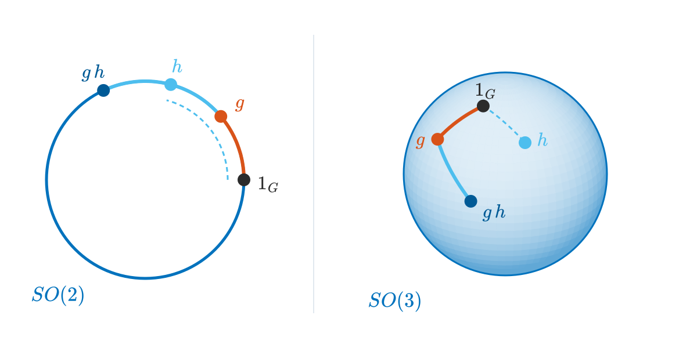
Special Euclidean Group $SE(n)$
The special Euclidean group (rigid-body transformations) is
$$ SE(n) = \left\{ G = \begin{bmatrix} R & t \\ 0 & 1 \end{bmatrix} \;:\; R \in SO(n),\; t \in \mathbb{R}^n \right\} $$with the matrix product, identity $I_{n+1}$ and inverse $G^{-1} = \left[\begin{smallmatrix} R^\top & -R^\top t \\ 0 & 1 \end{smallmatrix}\right]$. Dimension $n(n+1)/2$; e.g., $SE(2)$ and $SE(3)$.
$SE(2)$: Pose of a Differential Robot
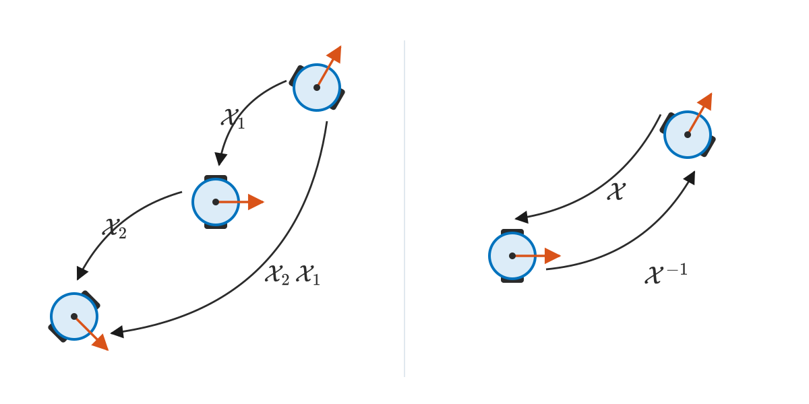
Translation Group $T(n)$
The translation group of dimension $n$ is the set of pure translations
$$ T(n) = \left\{ \begin{bmatrix} I_n & t \\ 0 & 1 \end{bmatrix} \;:\; t \in \mathbb{R}^n \right\} \cong (\mathbb{R}^n, +) $$with composition $t_1 + t_2$, identity $0$ and inverse $-t$. It is a commutative (abelian) Lie group of dimension $n$, where $\mathrm{Exp}(\tau) = \tau$ and $\mathrm{Log}(t) = t$.
Lie Algebra Theory
A Lie algebra is a vector space $\mathfrak{g}$ with a product operation $[\cdot, \cdot] : \mathfrak{g} \times \mathfrak{g} \to \mathfrak{g}$ satisfying:
- The $[\cdot, \cdot]$ product is linear in each of the variables.
- $[X, Y] = -[Y, X]$, for every $X, Y \in \mathfrak{g}$.
- The Jacobi identity:
$[X, [Y, Z]] + [Z, [X, Y]] + [Y, [Z, X]] = 0$,
for every $X, Y, Z \in \mathfrak{g}$.
This product operation is called the Lie bracket.
Lie Bracket
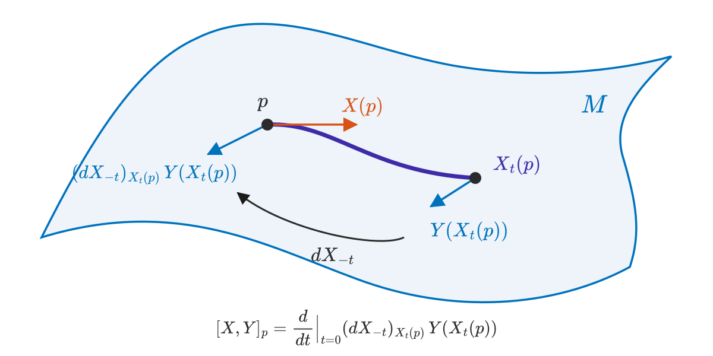
Lie Algebra
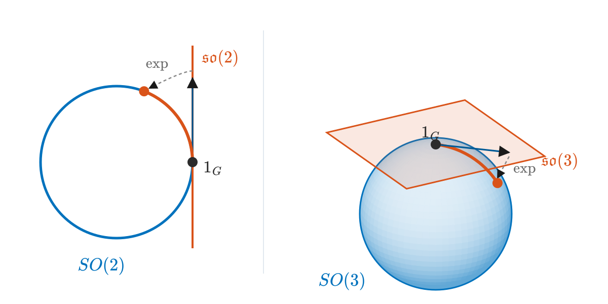
Example: Lie Algebra of S1
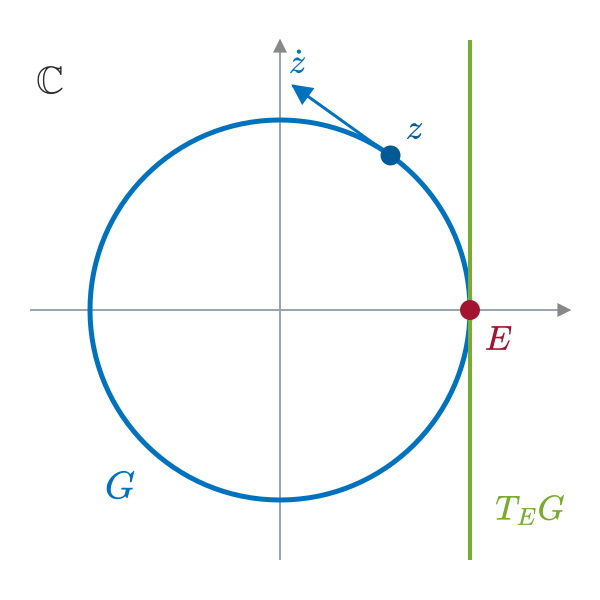
Example: Exponential Map on S1
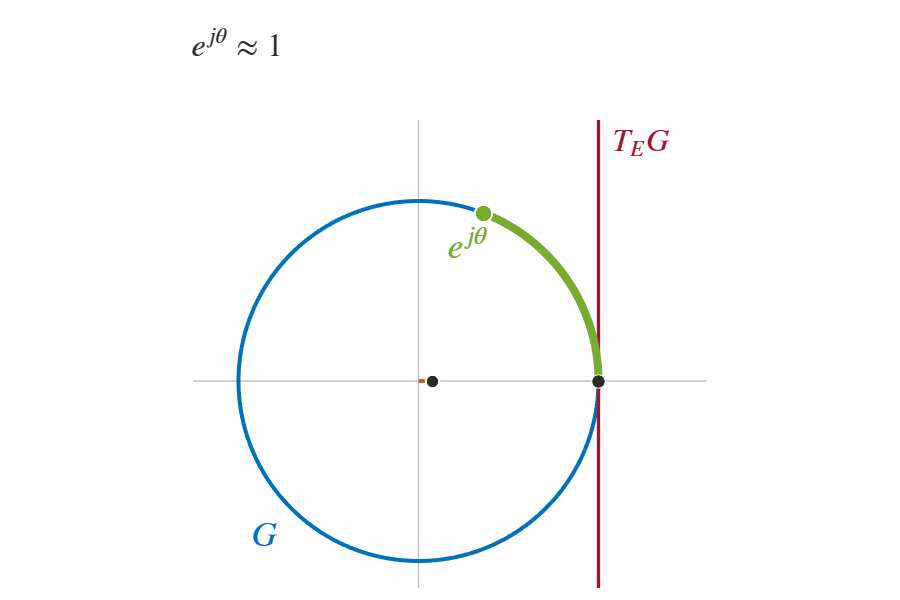
Example: Exponential Map on S1
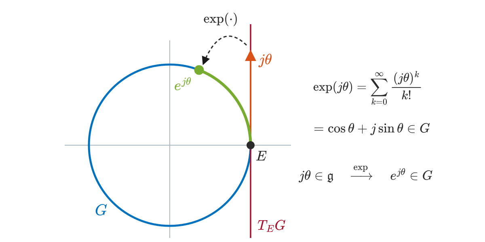
Exp and Log Maps
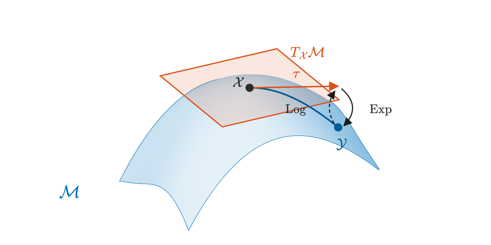
Exponential Map
Let $G$ be a matrix Lie group with Lie algebra $\mathfrak{g}$. The exponential map $\exp : \mathfrak{g} \to G$ is
$$ \exp(\tau^\wedge) = \sum_{k=0}^{\infty} \frac{(\tau^\wedge)^k}{k!} $$and $\mathrm{Exp} : \mathbb{R}^m \to G$ is $\mathrm{Exp}(\tau) = \exp(\tau^\wedge)$.
Logarithmic Map
The logarithmic map $\log : G \to \mathfrak{g}$ is the inverse of $\exp$, given near $I$ by
$$ \log(\mathcal{X}) = \sum_{k=1}^{\infty} \frac{(-1)^{k+1}}{k}(\mathcal{X} - I)^k $$and $\mathrm{Log} : G \to \mathbb{R}^m$ is $\mathrm{Log}(\mathcal{X}) = \log(\mathcal{X})^\vee$.
Adjoint
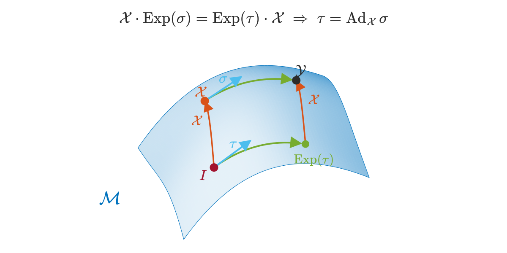
Jacobian
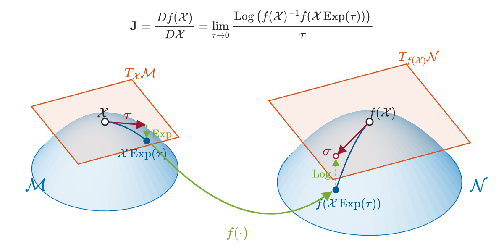
Plus and Minus Operators
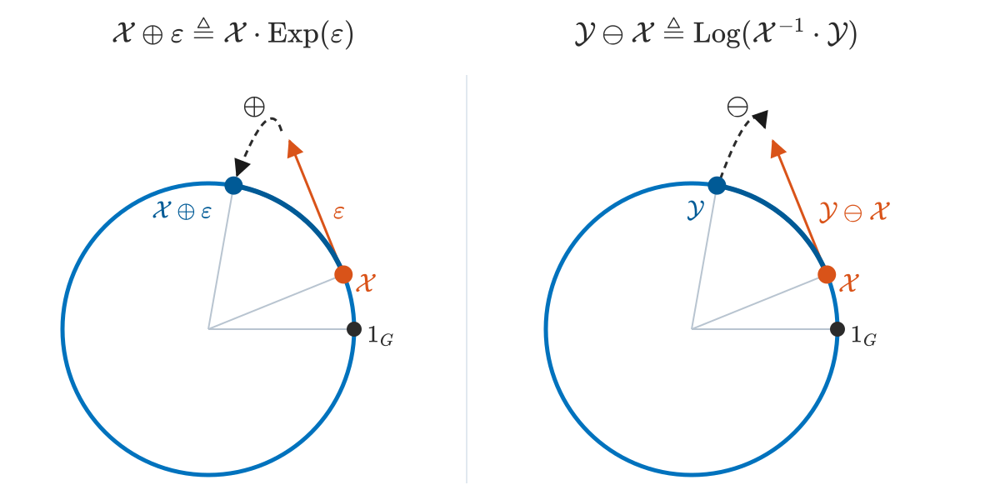
Random Variables on Lie Groups
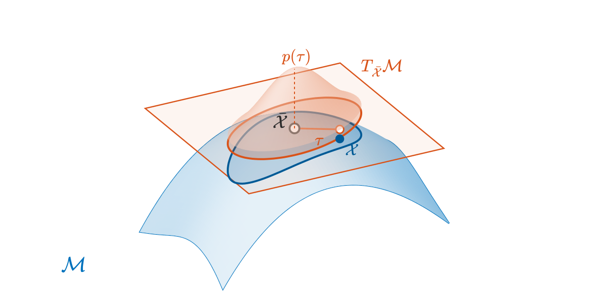
Random Variables on Lie Groups
A random variable $\mathcal{X} \in G$ has a concentrated Gaussian distribution, $\mathcal{X} \sim \mathcal{N}_G(\bar{\mathcal{X}}, \Sigma)$, if
$$ \mathcal{X} = \bar{\mathcal{X}} \oplus \tau = \bar{\mathcal{X}} \cdot \mathrm{Exp}(\tau), \qquad \tau \sim \mathcal{N}(0, \Sigma) $$where $\bar{\mathcal{X}} \in G$ is the mean and $\Sigma$ is the covariance in $T_{\bar{\mathcal{X}}}G$, small enough that $\mathrm{Exp}$ is one-to-one. Its density is
$$ p(\mathcal{X}) \propto \exp\left(-\tfrac{1}{2}(\mathcal{X} \ominus \bar{\mathcal{X}})^\top \Sigma^{-1} (\mathcal{X} \ominus \bar{\mathcal{X}})\right) $$Example: Random Walk on the Sphere
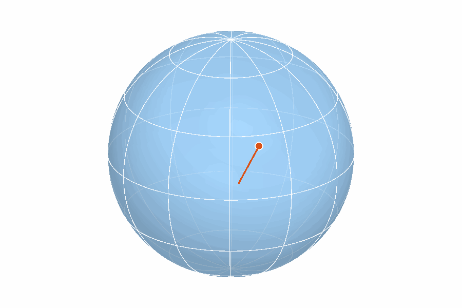
Example: Banana-Shaped Distribution
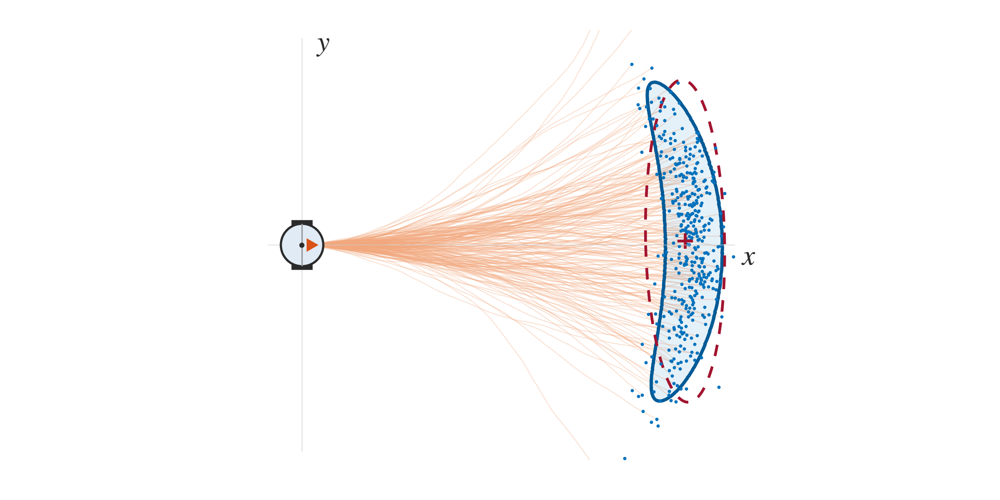
Example: Banana-Shaped Distribution in 3D
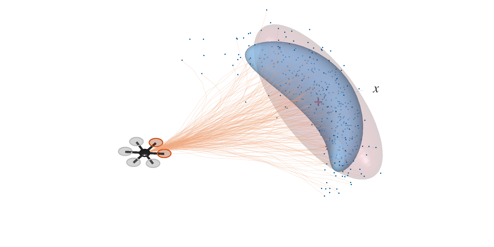
Dynamic Systems on Lie Groups
- $\mathcal{X}_k \in G$: state; $u_k$: input; $\Omega : G \times \mathbb{R}^p \to \mathbb{R}^m$: velocity (increment) in the Lie algebra
- $y_k \in G'$: measurement; $h : G \to G'$: observation map
- $w_k \sim \mathcal{N}(0, Q_k)$ and $v_k \sim \mathcal{N}(0, R_k)$: process and measurement noises in the tangent spaces
Classical EKF
D-EKF on Lie Groups
where $\hat{\Omega}_k = \Omega(\hat{\mathcal{X}}_{k|k}, u_k)$, $\mathcal{F}$ is the Jacobian of the model with respect to $\mathcal{X}$, and $J_r$ is the right Jacobian of $G$.
D-EKF on Lie Groups
where $z_{k+1}$ is the innovation and $\mathcal{H}$ is the Jacobian of $h$ with respect to $\mathcal{X}$.
Example: Navigation on $SE(3)$
- $R_k \in SO(3)$: attitude; $p_k \in \mathbb{R}^3$: position
- $u_k = (v_k, \omega_k)$: body velocity (odometry) and angular rate (gyroscope)
Example: Inertial Navigation on SE2(3)
- $\tilde{\omega}_k, \tilde{a}_k$: gyroscope and accelerometer readings (IMU); $g$: gravity
Example: Map-Based Localization
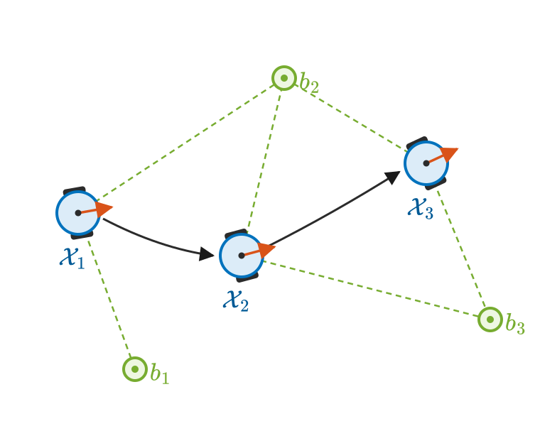
- $u_k = (v_k, 0, \omega_k)$: odometry (linear and angular velocity)
- $b_i$: known landmarks (the map)
- $y^i_k$: landmark $b_i$ measured in the robot frame
- The D-EKF-LIE estimates $\mathcal{X}_k$ from $u_k$ and $y^i_k$
Example: Map-Based Localization
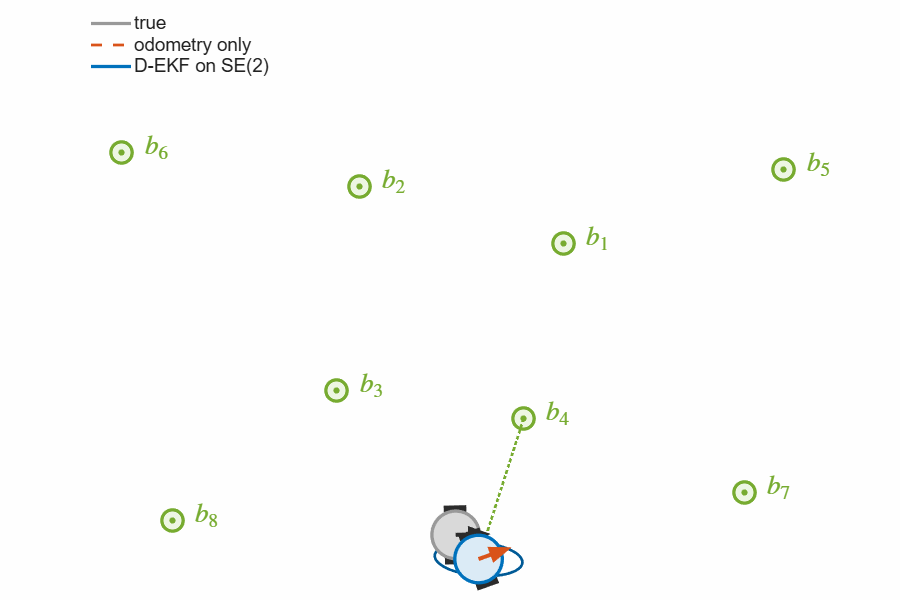